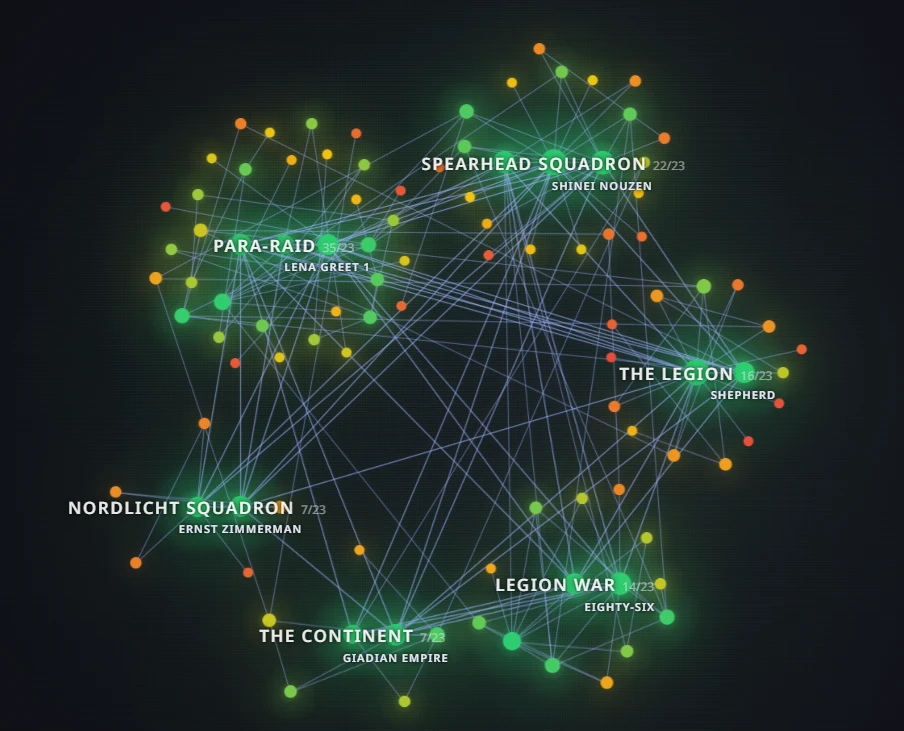
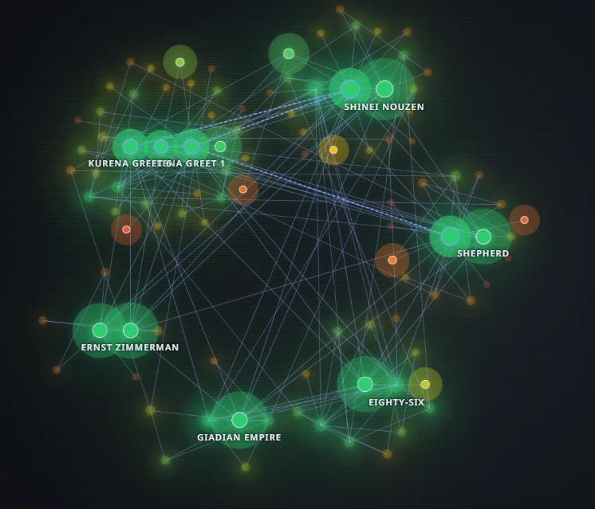

Memory graph
The Memory graph builds a mind-map from your chat: nodes with text (people, places, facts, events) connected by typed links, with one central node and a network around it.
It opens from the dock in its own window with two tabs, Graph and Library, where you can look at the graph, edit nodes and see which memories were pulled into the last prompt (the pathway overlay).

Why a graph
A graph keeps who is connected to what: that the innkeeper owes the hero a favour, that the key is in the harbour warehouse. The right memories are pulled in by meaning, not by position in the chat.
How it keeps itself tidy
- Regions — related nodes are grouped; each region holds a limited number of nodes (23 by default).
- Merging duplicates — near-identical nodes are merged on insert, before a region overflows.
- Reconsolidation — if a region still overflows, a cluster of weak nodes is rewritten into a compact one (preferred).
- Decay — as a last resort the weakest node is removed. Protected nodes (such as a region's centre) are never evicted.
- Matching by meaning uses a local embedding model in your browser — picking memories does not call a remote model.
Pathway — see what the model remembered
Switch on Pathway in the graph window and the graph shows the last retrieval: the beacon nodes the engine found by meaning, the route along the links between them, and everything else dimmed. It is the quickest way to understand why a particular memory did — or did not — make it into the prompt.

Start it from your lorebook
The graph can bootstrap from your Lorebook: existing entries become the first nodes, so it starts with your world instead of empty. Use the Bootstrap & graph panel in the memory graph window.
The graph window has side panels: Bootstrap & graph, Map visuals and Edit node. Node count is shown on the card subtitle in the engine panel.